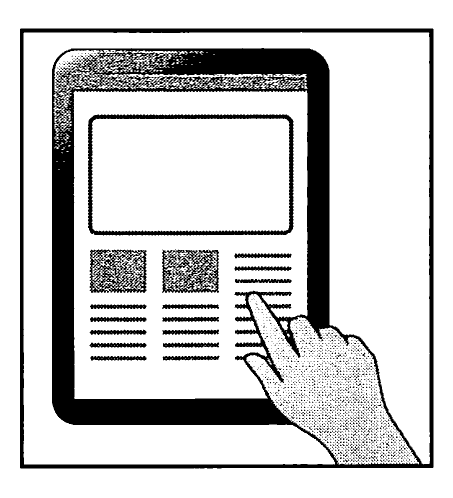

You and John, an exchange student from the UK, are the editors of a school English paper. He has written an article for the paper.
Do you like using a tablet in class? The UK has been promoting ICT (Information and Communication Technology) education, but I don't think it's going smoothly. How about in Japan? Results of some surveys about Japanese high schools give us some answers.

➤ The number of schools which didn't provide a tablet for each student was about five times as large as that of schools which did in 2018.
In 2020, the situation was as follows:
➤ The number of schools which didn't think of introducing tablets was more than three times as large as that of schools which did.
➤ 43.8% of private high schools got tablets for each of their students, while only 5.4% of public ones provided each student with one.
➤ There were many more private than public high schools which planned to give all students tablets.
As you know, in our school we are luckily provided with individual tablets. However, I wonder if they are properly and fully used by each student. Are the teachers skillful enough to use one? Are they trying to have each student make the most of his or her tablet in their everyday classes? I've got some information from the head teacher; four in ten of our math teachers are eager to promote ICT education. This is higher than the number of English teachers. Three in eleven of them are having their students use their tablets. And the lowest percentage goes to the Japanese teachers.
In fact, I wonder whether we will need to depend on such electronic tools more or not in the future. I think we've got to give questionnaires or something to the students and teachers at our school, and we may get hints about the usage of tablets which will lead to the improvement of the present situation.
問1
In terms of the ratios of your school's teachers who are trying ICT education eagerly, which shows the subject teachers' ranking from highest to lowest? 4
問2
John's comments on the current ICT education at his school show that 5.
問3
The statement that best reflects one finding from the survey is 6
問4
Which best summarises John's opinions about ICT education at his school? 7
問5
Which is the most suitable title for the article? 8